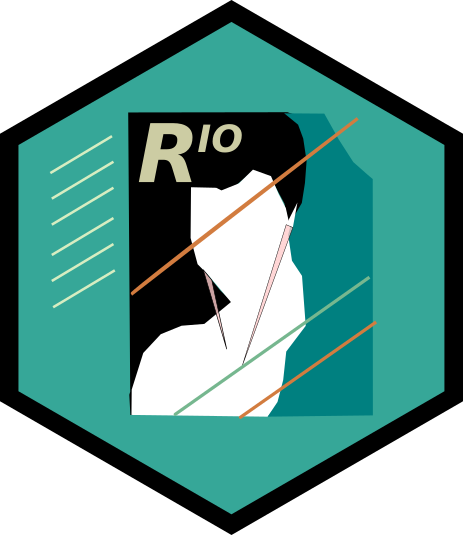

4 Fundamentals of working with Data
In this section, we will be learning how to import, and export data from R. We will also be talking about the different file types. This section is based on the relevant chapters from two of the renowned textbooks on tidyverse.1 These textbooks take different approaches for importing and working with data in RStudio using tidyverse packages. We present to you the most optimal workflows to facilitate reproducibility and ease of understanding.
4.1 Before we get started
Let us recap once again creating a project in R. It is a best practice to use create a project for each data analysis you are planning to perform. You can create a New Project using the File menu in RStudio. Let us create one now!
Reading and writing files often involves the use of file paths. A file path is a string of characters that point R and RStudio to the location of the file on your computer.
These file paths can be a complete location2 or just the file name.3 If you pass R a partial file path, R will append it to the end of the file path that leads to your working directory. The working directory is the directory where your .Rproj file is.
Run here::here() to see the file path that leads to your current working directory.
4.2 Importing data using the RStudio GUI
The RStudio IDE provides an Import Dataset button in the Environment pane, which appears in the top right corner of the IDE by default. You can use this button to import data that is stored in plain text files as well as in Excel, SAS, SPSS, and Stata files.
We recommend using .csv file type to read and write your data as a best practice. This will ensure cross compatibility between various programs as it is just a raw text file but just separated by a comma.

Note
There are different packages to import different types of data.
haven: SPSS, Stata, or SASreadxl: Excel spreadsheetsreadr: csv, txt, tsv etc.
However, we recommend using the rio package.
There are two main functions in the rio package, import() and export(). The import() function takes the file path as an input argument, while the export() function takes the object and destination file path as arguments.
The import() function has an additional argument setclass which needs to be set to tibble to import the data as a tibble (the workhorse of tidyverse workflows).
There are a number of differences between tibbles and data.frames. To see a full vignette about tibbles and how they differ from data.frame, please run vignette("tibble") in the console and read through that vignette.
Some major differences are:
- Input type remains unchanged -
data.framechanges strings as factors;tibblewill not - Variable names remain unchanged -
data.framewill remove spaces or add “x” before numeric column names.tibblewill not. - There are no
row.names()for atibble tibbleprint first ten rows and columns that fit on one screen
Exercise
Import the provided .csv file into the RStudio environment using the method mentioned above.
Can you see anything apprearing on the RStudio Console pane once you have imported the file?
Can you see anything apprearing on the RStudio Environment pane once you have imported the file?
Import the provided .xls file into the RStudio environment using the method mentioned above.
Change the sheet to import as well as skip the first row. See the changes happen in the R code syntax in the bottom right pane of the GUI
4.3 Saving and Loading a compressed .rds file
.rds is a file format native to R for saving compressed content. .rds files are not text files and are not human readable in their raw form. Each .rds file contains a single object, which makes it easy to assign its output directly to a single R object. This is not necessarily the case for .RData files, which makes .rds files safer to use.
Use the write_rds() function from the readr package to write an .rds file. Save the previously loaded data, as an .rds file using this function. You can look at the help menu to know more on the syntax or you can type ?write_rds in the Console pane.
Now you can open your file explorer go to your working directory and check if the file has been saved. Similarly, you can use the write_csv() function from the readr package to write a .csv file.
4.4 Principles of Tidy Data
4.4.1 What is Tidy Data?
Tidy data is a way to describe data that’s organized with a particular structure – a rectangular structure, where each variable has its own column, and each observation has its own row. — Hadley Wickham, 2014
4.4.2 Three Rules of Tidy Data
- Each variable must have its own column.
- Each observation must have its own row.
- Each value must have its own cell.
These three rules are interrelated because it’s impossible to only satisfy two of the three.

4.4.3 Messy Data vs Tidy Data
Tidy datasets are all alike, but every messy dataset is messy in its own way. - Hadley Wickham
Working with messy data can be messy!. You need to build custom tools from scratch each time you work with a new dataset.
Illustrations from : https://github.com/allisonhorst/stats-illustrations
4.4.4 Tidy data for more efficient data science
Packages like tidyr and dplyr can enable you to get on with analysing your data and start answering key questions rather than spending time in trying to clean the data.
Note
Tidy data allows you to be more efficient by using specialised tools built for the tidy workflow. There are a lot of tools specifically built to wrangle untidy data into tidy data.
One other advantage of working with Tidy data is that it makes it easier for collaboration, as your colleagues can use the same familiar tools rather than getting overwhelmed with all the work you did from scratch. It is also helpful for your future self as it becomes a consistent workflow and takes less adjustment time for any incremental changes.
Tidy data also makes it easier to reproduce analyses because they are easier to understand, update, and reuse. By using tools together that all expect tidy data as inputs, you can build and iterate really powerful workflows.
4.5 A word on Tibble
When loading data into R using the RStudio GUI using tidyverse, the data is automatically saved as a tibble. A tibble is a data frame, but they have some new functionalities and properties to make our life easier. It is the single most important workhorse of tidyverse.
You can change data.frame objects to a tibble using the as_tibble() function.
4.6 Working with Tibbles
Now that you have imported data into RStudio its a good practice to have a look at the data. There are many ways you can do it within RStudio.
- Through the Environment pane
View()function- Simply typing the name of the dataset in the Console
Some other things you can do to have a look at your data are:
- Checking the class of the dataset using
class()function - Checking the structure of the dataset using
str()function
Note
class() and str() are not just limited to datasets, they can be used for any R objects.
Some additional tips for quickly looking at your data:
head()tail()glimpse()
Exercise
Type the name of the dataset in the console and see what happens?
How many rows and columns can you visualize?
Now, try the head(), tail(), and glimpse() functions
Try to create a tibble manually in RStudio with a numeric, character, and factor variable. (Hint: vignette(‘tibble’) )